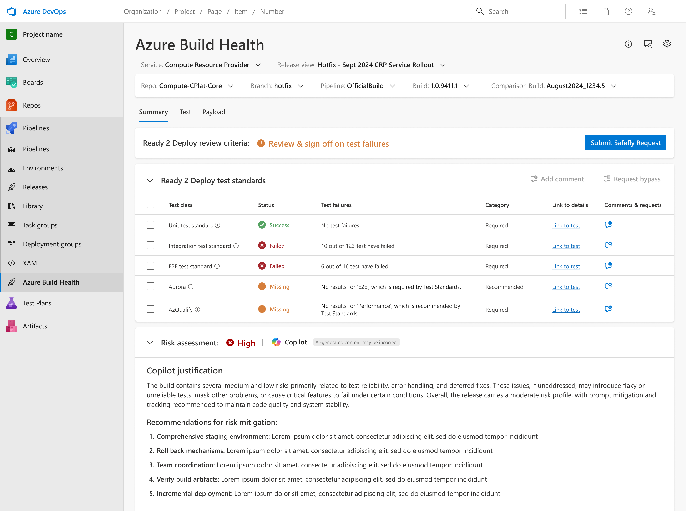
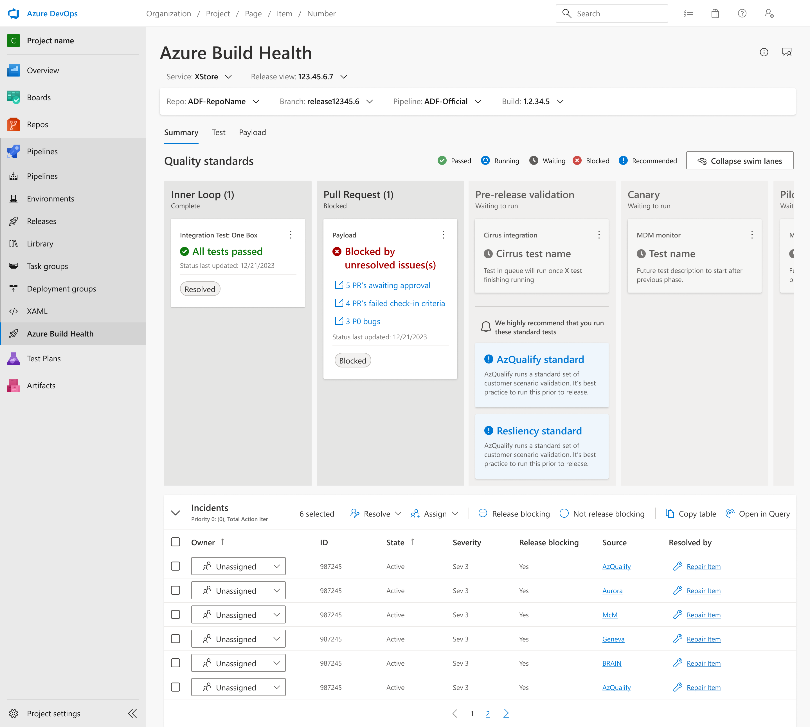
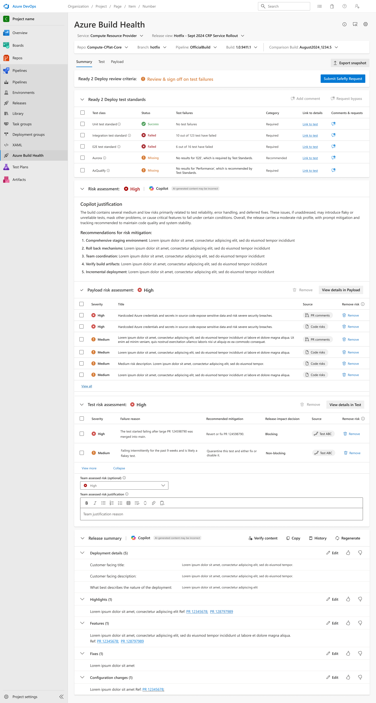

Lowering the cost of pre-deployment code reviews and automated documentation prep by integrating Copilot AI into Microsoft Azure's release engineering workflow.
Role
Lead UX Designer
Team
Azure Build Health, Copilot Engineers, PM
Type
Generative UX / Developer Tool

Overview
Lowering the cost of deployment investigations
Azure Build Health is a per-deployment testing tool used by Microsoft’s Azure engineers. On average, Azure teams spend 6+ hours a week investigating and resolving pre-deployment blockages and errors. Our team was tasked with lowering this operational overhead and finding opportunities to reduce post-deployment downtime by surfacing key insights earlier in the process.
To address this, I worked to integrate Copilot (AI) into Azure Build Health, consolidating workflows into a "single pane of glass" that replaced manual investigation with automated summaries. This case study is the second iteration of that work — building directly on the foundation established in Case Study 01.
The Challenge
Microsoft Azure’s deployment approval process is long and largely manual. Release Managers must compile documentation, assess risk, and present findings to an approval team before any deployment can proceed — a process that can take days.
In our first iteration, we focused on reducing the manual toil Release Managers face before entering the approvals process — giving them AI-generated risk assessments and automated context on each code change.
In this second iteration, the goal shifted: rather than just making pre-approval preparation easier, we needed to reduce the friction of the deployment process itself — reimagining how the Summary tab communicated readiness, risk, and next steps to support a faster path through approvals.
Discovery
Two parallel research streams
Before redesigning the Summary tab, we ran two concurrent research streams — one to diagnose the current experience's failure points, and one to validate the outcomes of our first iteration with real users.
Workstream 1 — Summary tab research
I conducted 8 semi-structured user interviews (2 active users, 6 non-users) to understand why the swim lanes were under-utilized and to identify higher-impact areas for Copilot integration. Three key themes emerged:
01
Confusing swim lanes
The swim lanes lacked actionable high-level takeaways and failed to support the high variety of deployment schedules and structures across teams.
02
Manual documentation
Release Managers still had to manually compile and format pre-deployment checklists and risk reports to present to the deployment approval team.
03
Information noise
Low-level bug and incident lists overwhelmed users. Release Managers wanted a single page displaying overall release health with actionable takeaways.
Workstream 2 — Validating iteration 1
In parallel, our team's UX researcher ran a full usability study to evaluate the AI Risk Assessment features shipped in iteration 1. The study gave us validated signal on what was landing well, where users were struggling, and how much trust we had earned — directly informing the scope and direction of this redesign. Two key themes emerged:
01
Trust in AI
Users still took time to manually validate AI-generated information. Because the model was still learning, outputs weren't always reliable — leaving users cautious about acting on them without cross-checking.
02
Untimely summarization
The surfacing of summarized content caused disruption at certain points in the workflow. Most users found the summaries helpful in principle, but the timing didn't align with where they were in their tasks.
User Flow
From branch cut to live deployment
The release journey in three stages — prepare and check the build, request the right approvals, then sign off and ship. When a check fails, both decision points route to a single Fix issues step that loops back to testing.
Complexity reduced to improve readability
First Iteration
Visualizing checkpoints with swim lanes
In our first MVP iteration, we designed a Summary tab featuring horizontal swim lanes to visualize every checkpoint in the release testing pipeline. We also embedded low-level tracking tables for incidents, bugs, and tasks to assist with active troubleshooting.

While we initially partnered with a small set of developer teams whose specific workflows fit this model, the experience failed to scale as wider Azure engineering organizations onboarded.
The MVP Result
The MVP suffered from a low adoption rate because the visual swim lanes were too rigid and failed to account for the diverse release structures used across different Azure services.
Design Decisions
Evolving the summary experience
We validated designs iteratively with around 10 users, replacing detailed noise with structured, AI-generated insights. Click any annotation to explore the key changes.

1
2
3
4
5
1
Ready 2 Deploy review criteria
A persistent banner surfaces the current gate status — letting Release Managers see at a glance whether outstanding failures need sign-off before the deployment can proceed.
2
Submit Safely Request
The primary deployment action is now a single, clearly-labelled CTA. Rather than navigating to a separate tool, Release Managers can trigger the approval request directly from the Summary tab — reducing friction in the deployment process.
3
Assessing risk through Copilot
Copilot generates an overall risk level and a plain-language justification — surfacing what's contributing to risk and why. The "AI-generated content may be incorrect" label was a deliberate design choice to build trust incrementally rather than oversell accuracy.
4
User overrides for AI output
Release Managers can correct the AI-generated risk level and add their own justification. Corrections feed back into Copilot to improve future outputs — giving users agency while the model continues to learn.
5
AI-generated release summary
Instead of spending over an hour manually compiling deployment notes, Copilot now drafts the full structured summary — customer-facing title, highlights, features, fixes, and configuration changes — ready for the approval team with one click.
Outcomes
Quantifiable impact
Following the launch of the redesigned Summary Tab, the new experience drove significant improvements in both developer efficiency and feature engagement:
60%
Increase in active tool usage and user adoption after the redesign.
<15m
Time spent compiling deployment notes (down from over an hour).
<1h
Weekly time spent evaluating release risk (down from 2-3 days).
Next Steps
Standardizing the feedback loops
Improve Trust
Establish a direct telemetry loop from user overrides back to the Copilot engineering team to continually retrain and refine the underlying models.
Extend Editing
Provide more granular editing capabilities to let users modify specific paragraphs of the generated text rather than doing an all-or-nothing override.
User Education
Lead monthly internal brownbag sessions to share tips, demo case studies, and drive deeper platform utilization across Azure engineering teams.